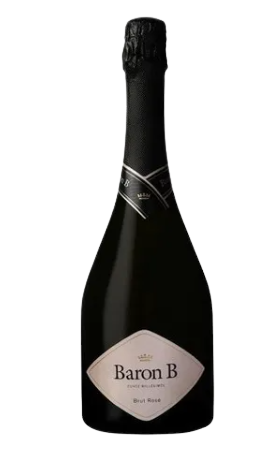
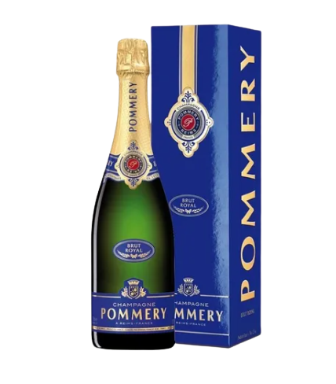
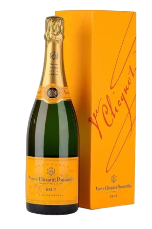

1
2
3
4




"Dom Pérignon es la marca de prestigio más célebre del mundo. Recibe su nombre en honor a Pierre Pérignon, monje benedictino a quien se le atribuye el descubrimiento del método champanoise. Dice la leyenda que cuando probó esta bebida por primera vez exclamó: venid pronto, estoy probando las estrellas. Con esta historia de trasfondo, Möet-Henessy decide crear este champagne en 1921, aunque no se puso a la venta en 1936. Es un “vintage” que tan solo se elabora en las mejoras añadas y con una crianza mínima de 8 años. "
El champagne Pommery Brut Royal es el cuvée más famoso de la casa. La noble etiqueta azul profundo te invita a un elegante momento de degustación. Date un capricho y mira el bonito champán amarillo pálido, con ligeros reflejos verdes. En nariz, disfrutará de aromas frescos y sofisticados de cítricos, flores blancas y frutos rojos. En boca es vivo y elegante y está dominado por trazas de pequeños frutos rojos. Este champagne se mantiene redondo, recto y armonioso hasta el final largo. ¡Por lo tanto, Pommery Brut Royal es un champán que se puede disfrutar fácilmente en cualquier momento del día!
Veuve Clicquot Yellow Label es un ejemplo perfecto de armonía entre delicadeza y energía. Dominada por Pinot Noir, este vino tiene una estructura firme, redondeada con un toque de Pinot Meunier. Casi un tercio de Chardonnay le da la elegancia y delicadeza necesaria para un equilibrio perfecto. EL champagne Yellow Label es la firma de la calidad y el estilo de Veuve Clicquot, que se regenera cada año gracias a nuestra imprescindible colección de vinos de reserva. Su brillante etiqueta amarilla refleja la chispeante personalidad del champán y las impecables credenciales de vinificación que lo conforman.